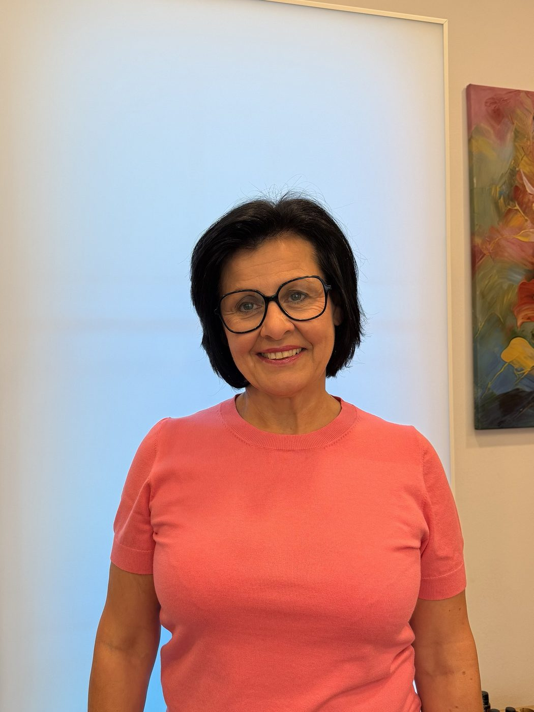
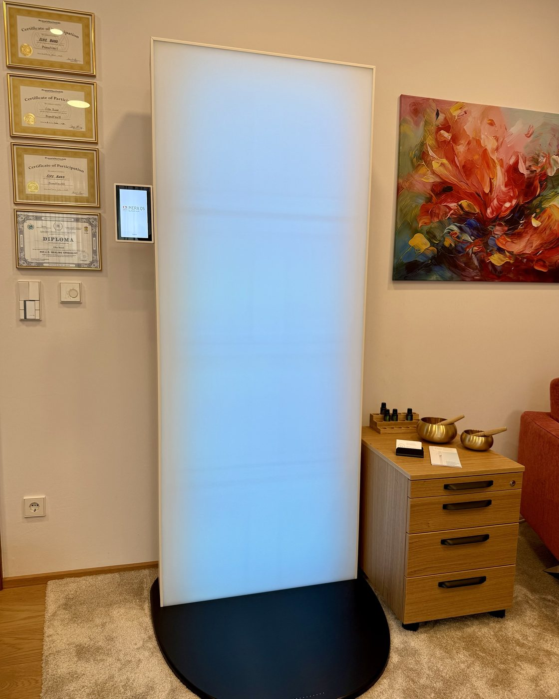

Elke Bund
Meine große Leidenschaft ist es, Menschen auf ihrem Weg zu mehr Gesundheit zu begleiten und zu unterstützen. Nachdem mich mein beruflicher Weg zunächst in eine andere Richtung geführt hat, habe ich mich über den zweiten Bildungsweg ganz meiner eigentlichen Leidenschaft gewidmet. 2014 erfüllte sich mein Herzenswunsch: Ich begann meine Ausbildung zur ganzheitlichen Gesundheitsberaterin.
Dabei lege ich den Fokus auf die Ursache Ihrer Beschwerden, nicht nur auf einzelne Symptome.
Ich arbeite mit mehreren, sich optimal ergänzenden Therapiemethoden, die Ihre Selbstheilungskräfte anregen, Ihr Immunsystem stärken und Körper, Geist und Seele gleichermaßen ansprechen.
Ich freue mich darauf, Sie auf Ihrem Weg zu mehr Gesundheit, Wohlbefinden, Energie und Lebensfreude zu begleiten.
Zwei Verfahren, einzeln oder kombiniert
Ich arbeite mit zwei sich ergänzenden bioenergetischen Verfahren: der MERA Q5 und der IMEDIS-Bioresonanz. Je nach Ihrem Anliegen können Sie sich für eines der beiden entscheiden oder beide miteinander kombinieren.

Was ist die MERA Q5?
Die MERA Q5 ist ein zertifiziertes Wellness-Gerät, entwickelt vom Schweizer Unternehmen Marexum. Sie arbeitet mit einer feinen Kombination aus Frequenztechnologie und Schwingungen. Das Gerät wurde entwickelt, um die natürlichen Regulations- und Ausgleichsprozesse des Körpers zu unterstützen und neu anzuregen.
Die Anwendung erfolgt bekleidet, in stehender oder sitzender Position. Viele Anwenderinnen und Anwender beschreiben ein tiefes Gefühl von Ruhe und Gelöstheit bereits während der Sitzung.
- Herkunft: entwickelt vom Schweizer Unternehmen Marexum
- Wirkprinzip: Frequenztechnologie
- Zertifiziertes Wellness-Gerät
- Anwendung: nicht-invasiv, bekleidet, im stehen/sitzen
Die MERA Q5 dient der Entspannung und dem allgemeinen Wohlbefinden. Sie ersetzt keine medizinische Diagnose oder Behandlung.
IMEDIS Bioresonanz
Neben der MERA Q5 biete ich auch Behandlungen nach der IMEDIS-Methode an, einem bioenergetischen Verfahren aus dem Bereich der Komplementärmedizin.
Die IMEDIS-Methode misst und analysiert die energetischen Systeme des Körpers und macht so mögliche energetische Ungleichgewichte sichtbar, etwa durch Umwelteinflüsse, Alltagsstress oder andere Belastungen. Auf Basis dieser Analyse wird ein individuell abgestimmtes Frequenzprogramm erstellt, das die Selbstregulation und die natürlichen Selbstheilungskräfte des Körpers unterstützen soll.
Während der Anwendung sind Sie über Elektroden an Händen, Füßen und Stirn mit dem Gerät verbunden. Die Sitzung ist schmerzfrei und wird von den meisten Klientinnen und Klienten als entspannend empfunden.
Die IMEDIS-Bioresonanz kann eigenständig oder ergänzend zur MERA Q5 angewendet werden.
- Herkunft: IMEDIS-Institut, Moskau (Prof. Gotowsky)
- Wirkprinzip: Frequenzanalyse mit individuell abgestimmtem Frequenzprogramm
- Komplementärmedizinisches Verfahren
- Anwendung: nicht-invasiv, über Elektroden an Händen, Füßen und Stirn
Die IMEDIS-Methode stellt keine Diagnose und keine Behandlung im schulmedizinischen Sinne dar.
Was Sie bei einer Anwendung erwartet
Ob MERA Q5, IMEDIS-Bioresonanz oder eine Kombination aus beidem, jede Sitzung beginnt mit einem kurzen persönlichen Gespräch und endet mit ausreichend Zeit zum Nachspüren. So richte ich die Anwendung ganz auf Sie und Ihr aktuelles Befinden aus.
Gespräch
Kurzes Ankommen und Austausch darüber, was Sie gerade beschäftigt und wo Sie sich mehr Ausgleich wünschen.
Anwendung
Die Dauer richtet sich nach dem gewählten Verfahren, die MERA Q5 arbeitet z. B. ca. 30 Minuten.
Nachruhe
Zeit zum Nachspüren und ein kurzer Abschluss, bevor Sie gestärkt in Ihren Alltag zurückkehren.
Mögliche Schwerpunkte
Kennenlern-Gespräch
Kurzes, unverbindliches Telefonat, um Ihre Fragen zu klären und einen Termin zu vereinbaren.
MERA Q5
Ca. 60 Minuten inkl. Gespräch und Nachruhephase. Rufen Sie an oder schreiben Sie mir für die aktuelle Preisliste.
IMEDIS Bioresonanz
Inkl. Gespräch. Rufen Sie an oder schreiben Sie mir für die aktuelle Preisliste.
Vereinbaren Sie Ihren Termin
Ich freue mich auf Ihre Nachricht oder Ihren Anruf. Termine vergebe ich telefonisch nach Vereinbarung.
- Adresse
- Alfred-Coßmannweg 8a
8530 Deutschlandsberg
Österreich - Telefon
- +43 664 91 90 900
- Öffnungszeiten
- Montag – Donnerstag, 9:00 – 18:00 Uhr
Termine nach telefonischer Vereinbarung